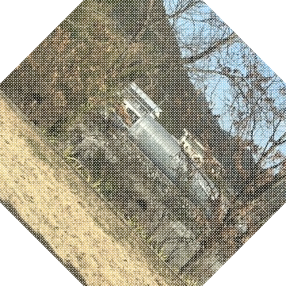
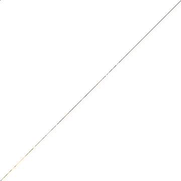

行列の式 \( A\mathbf{x} \) はプログラムの中でどう動くのか。
draft.py から sample.py への進化過程。

原点(0,0)を中心とした回転数式をそのまま実装。
90度回転
整数→整数への変換のため
綺麗に回る

崩壊45度回転
座標がマイナスになり切れる
穴が開く
Y座標の計算式で符号を間違えて実装していた。
その結果、45度で特異行列（ランク落ち）になっていた。
\[ \theta=45^\circ \implies \cos(90^\circ) = \mathbf{0} \]
平面が「直線」に潰れ、画像が消失した。
左上原点のまま回したため、位置も大きくずれていた。
(行列式0の崩壊と同時に、画面外へ飛んでいた)
90度のような整数の場合でも発生しうる「穴」の問題。
しかし45度での「崩壊」の主犯は特異行列だった。
行列式が常に \(1\) になる正しい回転行列へ。
\( y' = s \cdot x + c \cdot y \)
「平行移動 \(T\)」を組み合わせて中心を維持。
\[ \mathbf{x}' = T \cdot R_{\text{correct}} \cdot T^{-1} \cdot \mathbf{x} \]
元画像 (input.jpeg)
校舎からの風景
変換後 (output_45.png)
中心回転: 成功
穴(Holes): あり (仕様)
Note:
「穴」は順方向マッピング(Forward Mapping)の特性としてあえて残した。
sample.pyにより、画像の消失を防ぎ、意図した通りの構図での回転を実現した。
\( A\mathbf{x} \) という抽象的な記号が、
c*x - s*y という具体的な積和演算に落ちる過程を確認した。
「回してズレる」問題を、
「平行移動との合成」によって解決。
行列の積の順序の重要性を学んだ。
45度回転での「崩壊」の原因（行列式=0）をAIと共に特定し、数学的に修正した。
Linear Algebra Final Presentation
本課題において、ChatGPT等の生成系AIを「答えを丸投げする道具」ではなく、
「思考を深め、検証するパートナー」として以下の通り活用しました。
必要な構成要素（数式、コード対比、失敗談のストーリー）をプロンプトとして入力し、HTML/CSSのドラフトを生成させました。
最終的なコードの修正・統合・画像の埋め込みは、自分たちの手で行いました。
技術的な解説の流れをどう説明するかについてドラフトを作成させました。
その内容をもとに、実際の体験に基づいて大幅に加筆・修正を行いました。